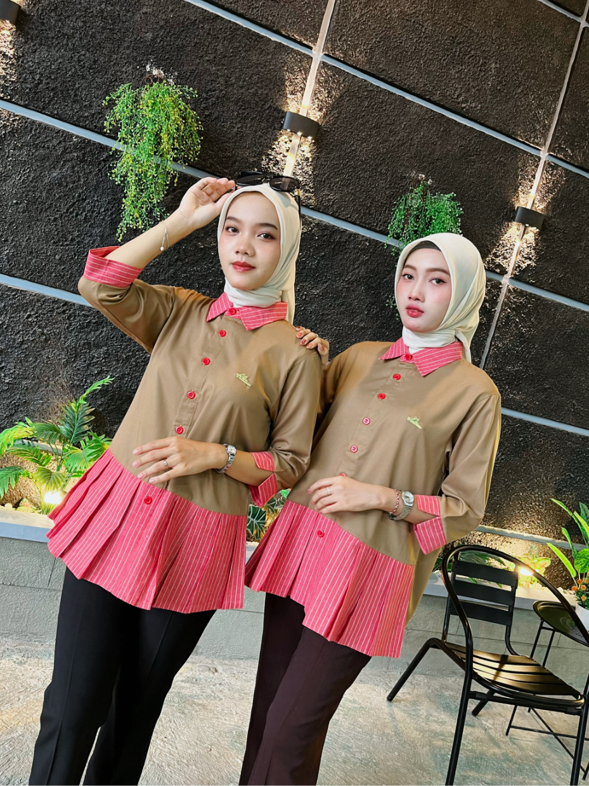
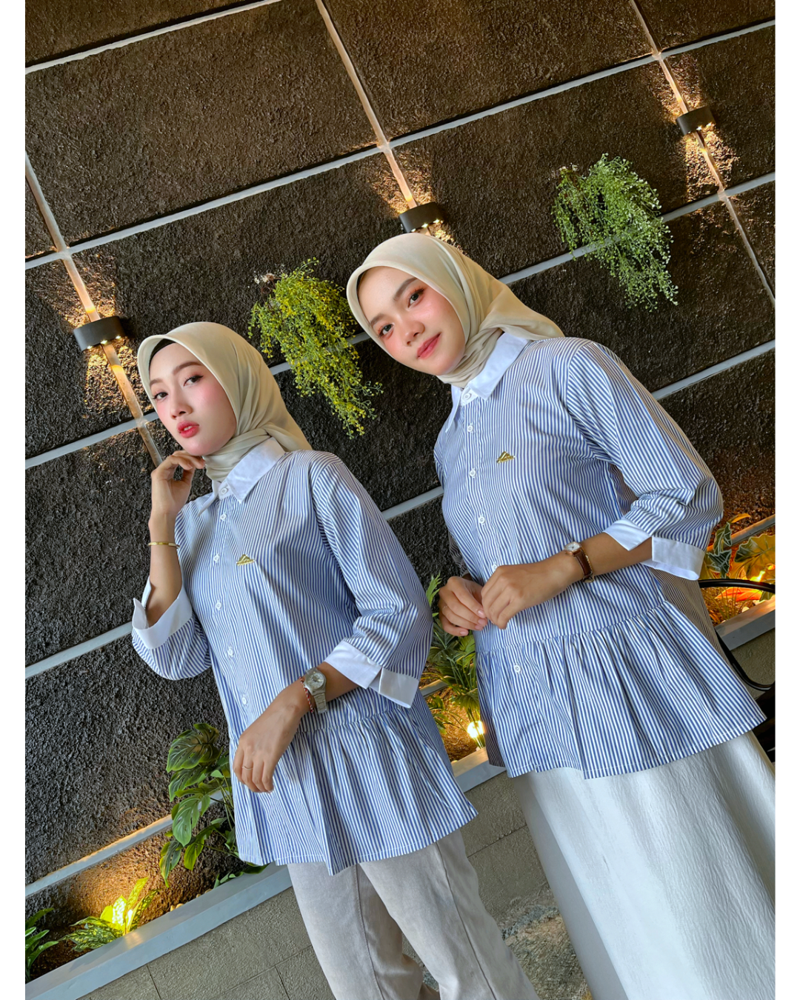

Mengapa Satu Model Bisa Memiliki Dua Karakter?
Dalam dunia fashion, detail sering kali menjadi pembeda. Perubahan kecil pada warna, motif, potongan, atau aksen mampu menghadirkan karakter yang berbeda meskipun siluet dasarnya tetap sama.
Inilah yang membuat sebuah koleksi terasa menarik. Bukan karena desainnya benar-benar baru, melainkan karena setiap detail memberikan identitas yang berbeda bagi pemakainya
Vania dan Niki lahir dari gagasan tersebut. Keduanya mengusung siluet blouse yang sama-sama nyaman dikenakan untuk aktivitas sehari-hari, namun memiliki karakter yang berbeda melalui permainan warna, detail, dan nuansa desain.
Vania: Elegan dalam Kesederhanaan

Bagi sebagian wanita, gaya yang tenang justru memberikan kesan paling kuat. Tidak banyak detail yang mencuri perhatian, namun setiap elemennya terasa seimbang.
Vania dirancang dengan pendekatan tersebut. Siluetnya sederhana, mudah dipadukan dengan berbagai bawahan, dan tetap relevan dikenakan untuk aktivitas kerja, pertemuan, maupun acara keluarga.
Karakter klasiknya menjadikan Vania sebagai pilihan bagi mereka yang menyukai gaya yang tidak lekang oleh waktu.
Niki: Detail yang Mencuri Perhatian

Berbeda dengan Vania, Niki tampil lebih ekspresif melalui kombinasi warna dan permainan detail.
Aksen garis pada kerah, manset, serta bagian bawah blouse memberikan dimensi visual yang membuat tampilannya terasa lebih hidup. Kombinasi warna yang kontras juga menghadirkan kesan segar tanpa mengurangi nuansa elegan yang menjadi ciri khas ATABAN.
Niki menjadi pilihan bagi wanita yang ingin tampil rapi, tetapi tetap memiliki sentuhan karakter dalam setiap penampilannya.
Mana yang Lebih Cocok?
Jawabannya bukan tentang mana yang lebih baik.
Jika kamu menyukai tampilan yang klasik, bersih, dan mudah dipadukan untuk berbagai kesempatan, Vania bisa menjadi pilihan yang tepat.
Namun jika kamu ingin menghadirkan sedikit aksen pada outfit tanpa terlihat berlebihan, Niki menawarkan karakter yang berbeda.
Keduanya memiliki fungsi yang sama, tetapi memberikan kesan yang berbeda ketika dikenakan.
Dua Karakter, Satu Filosofi
Baik Vania maupun Niki dirancang dengan filosofi yang sama: menghadirkan pakaian yang nyaman, mudah dipadukan, dan tetap relevan digunakan dalam berbagai aktivitas.
Karena sebuah koleksi yang baik bukan hanya indah saat pertama kali dikenakan, tetapi juga tetap menjadi pilihan di berbagai kesempatan.